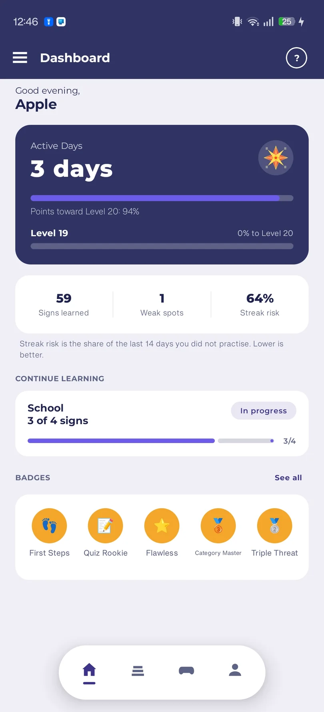
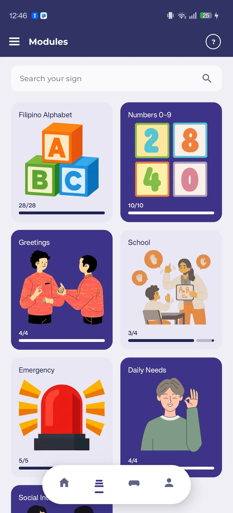
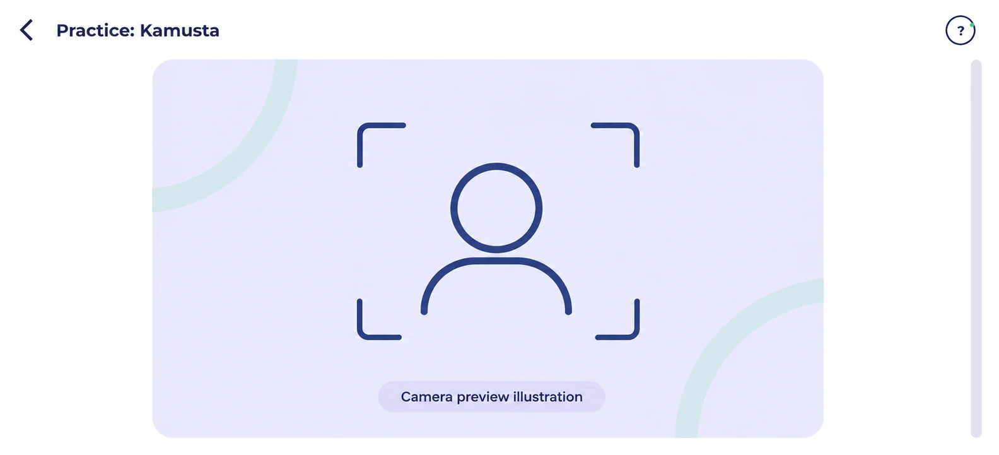
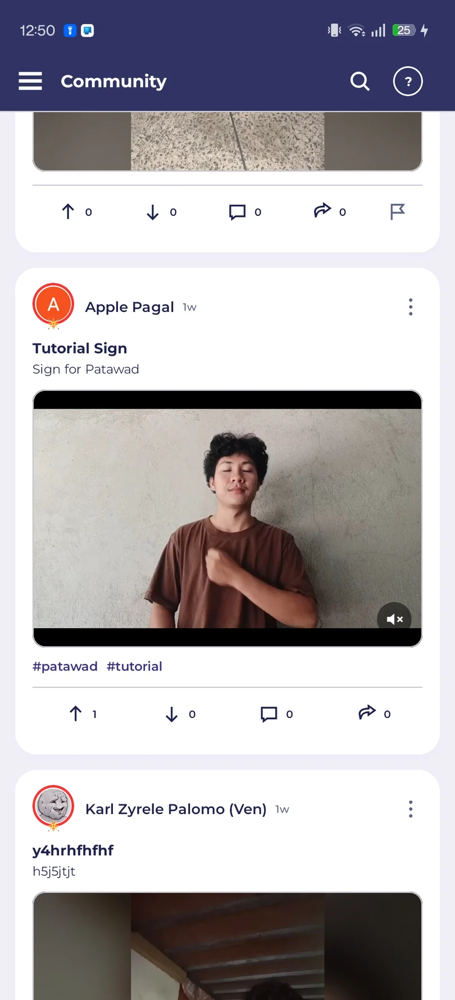

Make practice a habit.
Quizzes, XP, streaks, and badges give you a reason to keep going. Follow your progress, one session at a time.
Filipino Sign Language. Everyday connection.
Learn Filipino Sign Language
with your camera.
Meet Kinetix FSL. Learn a sign, give it a try, and build your confidence—one meaningful moment at a time.
Preview build · Free download for Android

Actual app screen · Development preview
Small lessons. Room to repeat.
On-device feedback as you learn.
Your practice goes where you go.
Made for your learning journey
From your first letter to everyday expressions, make space for a new way to connect.

Explore reference images and videos, then take your time. Loop a lesson, adjust playback speed, zoom in, or mirror the view to focus on the details.

Try a sign and review feedback on your attempt. Recognition runs on your phone, so camera frames stay on your device during scoring.
Camera feedback is being developed and validated per module. Results can vary with lighting, framing, and movement.
Quizzes, XP, streaks, and badges give you a reason to keep going. Follow your progress, one session at a time.
Discover community posts, share sign videos, and connect with other learners when you’re online.

Start small. Keep growing.
Build your foundations, then explore the expressions that bring everyday life a little closer.
Based on the current lesson catalog. Lessons may grow as the app develops. Camera-scoring coverage varies by module.
Your next small step
A simple rhythm for building confidence.
Watch a reference video or study an image. Take a closer look, as often as you need.
Find good light, frame your hands, and practise with your phone’s front camera.
Use the feedback as guidance, revisit the lesson, and celebrate the practice itself.
Some moments need a connection. Your practice doesn’t have to.
Lessons · Learning room · Camera practice · Quizzes · Progress & badges · Gesture to Text
Guest mode · No account neededCommunity · Chat · Text to Gesture · Cloud progress backup · Online notifications
Internet and account requiredThe story behind Kinetix
Kinetix FSL is a BSIT capstone project from Batangas State University, JPLPC-Malvar. It brings guided learning and on-device sign recognition together in an Android app for Filipino Sign Language learners.
Created with students, families, friends, and educators in mind, it’s a small contribution toward more opportunities to learn and connect.
Kinetix FSL is a practice aid, not a replacement for FSL teachers or learning with the Deaf community. Recognition is still developing, and feedback won’t always get it right.
Try it on your phone today
Download the Kinetix FSL preview build for Android.
The
official release will replace it here when it’s ready.
Before you install, please read the Privacy Notice and the Terms of Use.
This is a debug preview build for testing. Expect bugs; the official release APK will replace it.
Only install Kinetix FSL from the Download button on this website.
A little more clarity
Here’s what to know while we build.
You can download it now. A preview (debug) build is available from the Download button on this page. The official release will replace it here when it’s ready.
Lessons, camera practice, quizzes, progress tracking, and Gesture to Text are designed to work offline. Community features, Text to Gesture, sign-in, and cloud backup need an internet connection.
Guest mode is designed for learning and offline practice without an account. Community features and cloud progress backup require sign-in.
Camera frames used for sign recognition are processed on your phone, not uploaded for scoring. Media you choose to post to the community is a separate online feature.
The planned Android APK requires Android 10 or newer and an arm64 phone. Camera practice needs a front camera. There is no iPhone release planned for this website.
The lesson catalog contains 59 signs across seven modules. Camera feedback is being developed and validated per module; lesson availability does not mean every sign is ready for camera scoring.
No. Kinetix FSL is a learning and practice aid. Feedback can vary with lighting, framing, movement, and the signer. Learn alongside FSL teachers and the Deaf community whenever possible.